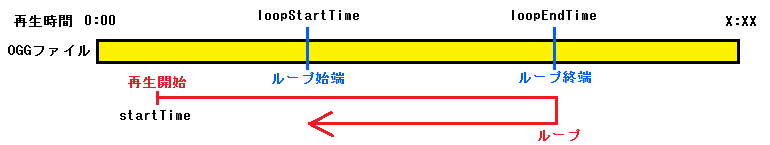

命令リファレンス
命令リファレンス
Ymplayer.setStaticEffectOgg
Oggの再生前・停止前にあらかじめ設定するエフェクト関係の項目をセットします
変更したくない項目は、引数をnullにしたり、省略したりしてください
※ このメソッドの後に、updatePlayInfo()を呼び出すことで、MusicPlayerに反映されます
書式
setStaticEffectOgg(fadeInTime, fadeOutTime, startTime, loopStartTime, loopEndTime, fileLoop)
- fadeInTime(省略可能)
- フェードインしながら再生する時間（ミリ秒）(1～)、フェードインしないなら0
- fadeOutTime(省略可能)
- フェードアウトしながら停止する時間（ミリ秒）(1～)、フェードアウトしないなら0
- startTime(省略可能)
- 再生開始する時間をミリ秒単位で指定(1～(再生するoggの総再生時間-1))、指定しないなら0
※ loopEndTimeが0以外の時は、値を指定できる範囲は(1～loopEndTime)になります
- loopStartTime(省略可能)
- ループした後に戻る再生位置(ループ始端)をミリ秒単位で指定(1～(再生するoggの総再生時間-40))、指定しないなら0
- loopEndTime(省略可能)
- ループする再生位置(ループ終端)をミリ秒単位で指定(1～(再生するoggの総再生時間) ＆ loopStartTime + 40 以上)、指定しないなら0
- fileLoop(省略可能)
- OggファイルがOggループ(RPGツクール用ループ)に対応していて、そのループを使うなら1、使わないなら0
※ 対応していなかったら通常のループになるが、fileLoop が 1 なら loopStartTime, loopEndTime の値は無視される
【startTime, loopStartTime, loopEndTime の関係】

このメソッドを使うより、下記のメソッドを使うことを推奨します
下記のメソッドを使用した後に、updatePlayInfo()を呼び出さないとMusicPlayerに反映されません。
例
（予め test.mid をTonyuに登録しておいてください）
（予め test.ogg をプロジェクトのフォルダに置いてください）
extends SpriteChar;
$mplayer = new Ymplayer();
$mplayer.play($se_test, 0); // Tonyu開発環境版では、起動してから一度midiを再生しないとoggを再生できない
wait(20);
$mplayer.stop();
wait(20);
oggFadeInTime = 0;
oggFadeOutTime = 0;
oggStartTime = 0;
oggLoopStartTime = 0;
oggLoopEndTime = 0;
oggFileLoop = 0;
while (1) {
if (getkey(65) > 0 && oggFadeInTime > 0) oggFadeInTime -= 50; // A:フェードイン－
if (getkey(83) > 0) oggFadeInTime += 50; // S:フェードイン＋
if (getkey(68) > 0 && oggFadeOutTime > 0) oggFadeOutTime -= 50; // D:フェードアウト－
if (getkey(70) > 0) oggFadeOutTime += 50; // F:フェードアウト＋
if (getkey(71) > 0 && oggStartTime > 0) oggStartTime -= 100; // G:開始位置－
if (getkey(72) > 0) oggStartTime += 100; // H:開始位置＋
if (getkey(74) > 0 && oggLoopStartTime > 0) oggLoopStartTime -= 100; // J:ループ開始位置－
if (getkey(75) > 0) oggLoopStartTime += 100; // K:ループ開始位置＋
if (getkey(76) > 0 && oggLoopEndTime > 0) oggLoopEndTime -= 100; // L:ループ終了位置－
if (getkey(187) > 0) oggLoopEndTime += 100; // ;:ループ終了位置＋
if (getkey(186) == 1) oggFileLoop = !oggFileLoop; // ::OggループON/OFF
if (getkey(90) == 1) { // Z:再生
$mplayer.setStaticEffectOgg(oggFadeInTime, null, oggStartTime, oggLoopStartTime, oggLoopEndTime, oggFileLoop); // フェードアウト以外を変更
$mplayer.updatePlayInfo(); // 更新
$mplayer.play("test.ogg", 1);
}
if (getkey(88)==1) { // X:停止
$mplayer.setStaticEffectOgg(null, oggFadeOutTime, null, null); // フェードアウトのみ変更
$mplayer.updatePlayInfo(); // 更新
$mplayer.stop();
}
drawText(100, 0, "フェードイン ：" + oggFadeInTime , $clWhite);
drawText(100, 20, "フェードアウト：" + oggFadeOutTime , $clWhite);
drawText(100, 40, "開始位置 ：" + oggStartTime , $clWhite);
drawText(100, 60, "ループ開始位置：" + oggLoopStartTime, $clWhite);
drawText(100, 80, "ループ終了位置：" + oggLoopEndTime , $clWhite);
drawText(100, 100, "Oggループ ：" + oggFileLoop , $clWhite);
update();
}
戻る